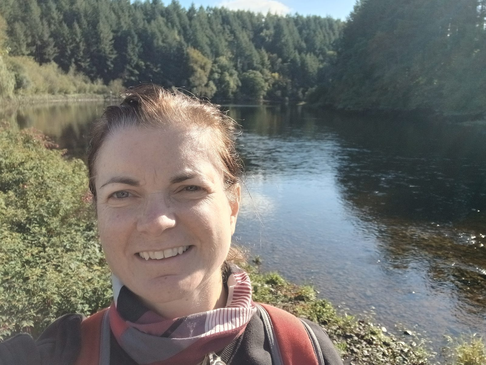

Come walk the
Earth Camino!

Cecily Maher
Cecily is a volunteer with the B Corridor Waterford, the Eco-Action Group of St Joseph's, St Benildus' & St Mary's Parish, and is a Laudato Si Animator. As a course facilitator and retreat provider, her work focuses on healing the sense of separation between humanity and the Earth.
On Monday 9 November, Cecily Maher will set off on a six-day walk from Waterford to Dublin to reach the National Climate March on Saturday 14 November.
During this time, Cecily will walk more than 220kms, over five marathons and traverse five counties. The Earth Camino will take in the beautiful South East Greenway to New Ross, the Barrow Way to Kildare, and the Grand Canal to Dublin City.
Why she is walking
- To slow down
- Listen to the Earth
- Meet others caring for nature
- Raise awareness of the Climate March
- Take contemplative action
She would be delighted for you to join her along the route. Come for a few steps, a kilometre, a stage or a day. All are very welcome!
To join her, or for any questions, email earthcamino@gmail.com
We cannot love what we do not know and we will not save what we do not love.